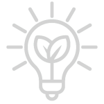

LA NASCITA DELL'AZIENDA
Da sogno a realtà. New Horizon nasce in un garage, come le altre più grandi compagnie note (e.g. Google, Apple, ecc) per poi crescere sino a diventare una grande compagnia con una sede dall'estensione di 6 km².
I NOSTRI IDEALI
La nostra azienda esiste per promuovere lo sviluppo scientifico, quello tecnologico e la ricerca necessari a permettere, un domani, all'uomo di andare a colonizzare nuovi pianeti. Tuttavia non stiamo trascurando la nostra amata Terra, pertanto usiamo quanta più energia pulita possibile per le nostre attività.
LO SVILUPPO
Un secolo fa non esistevano ancora i cellulari, i computer, gli shuttle, i satelliti e molto altro. Lo sviluppo tecnologico dell'ultimo secolo ha permesso alla nostra azienda di nascere e realizzare i nostri obiettivi. Ora noi stessi vogliamo collaborare al progresso come forma di ringraziamento per tutte le scoperte scientifiche che ci hanno permesso di diventare un'azienda tanto grande.
Abbiamo scienziati dei materiali che ogni giorno ci sorprendono con nuove innovazioni per spingere più in la gli obiettivi attuali. Abbiamo software e hardware sempre più potenti che ci permettono calcoli e strumentazioni sempre più precisi.
Il nostro obiettivo attuale consiste nel realizzare una sonda in grado di rilevare forme di vita mono o pluricellulari su un dato pianeta. Per fare ciò facciamo affidamento alle nuove scoperte dei nostri scenziati.
ENERGIA PULITA
Pannelli fotovoltaici
1 000 000 di pannelli fotovoltaici sono attualmente usati dalla nostra compagnia per alimentare gran parte delle strutture.
Fino a 4200 kWh di potenza erogata da ciascun pannello (in base all'orario del giorno e alla nitidezza del cielo).
Sino ad ora sono stati prodotti 131 400 TW di energia pulita grazie a questi moduli.
Sono stati salvati 3 400 000 alberi grazie ai nostri pannelli fotovoltaici.
Pale eoliche
30 000 pale eoliche sono attualmente usate dalla nostra compagnia per ricaricare mezzi di trasporto terrestri elettrici e le batterie per le strumentazioni spaziali.
Fino a 75 000 kWh di potenza erogata da ciascuna pala (in base all'intensità e la direzione del vento).
Sino ad ora sono stati prodotti 118 260 TW di energia pulita grazie a questi impianti eolici.
Sono stati salvati 3 060 000 alberi grazie alle nostre pale eoliche.
I FONDATORI
Ci siamo conosciuti all'università e da allora non ci siamo più separati. Ora gestiamo New Horizon assieme secondo gli ideali e gli obbiettivi che condividiamo.
Cisotto Emanuele
Lazzaro Davide
Rizzo Alessandro
Scialpi Paolo